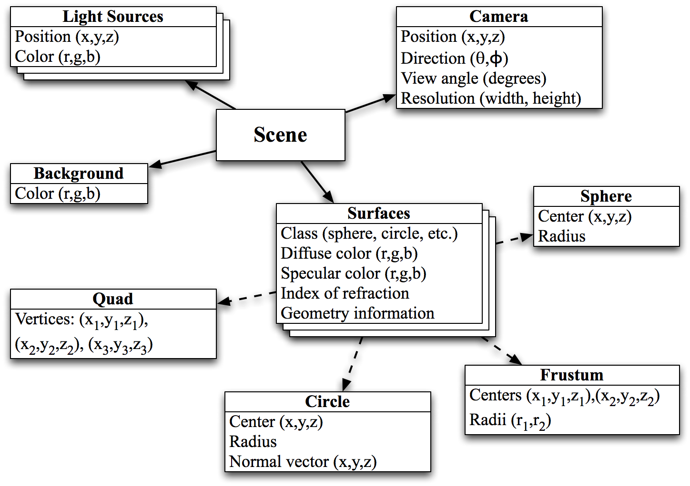
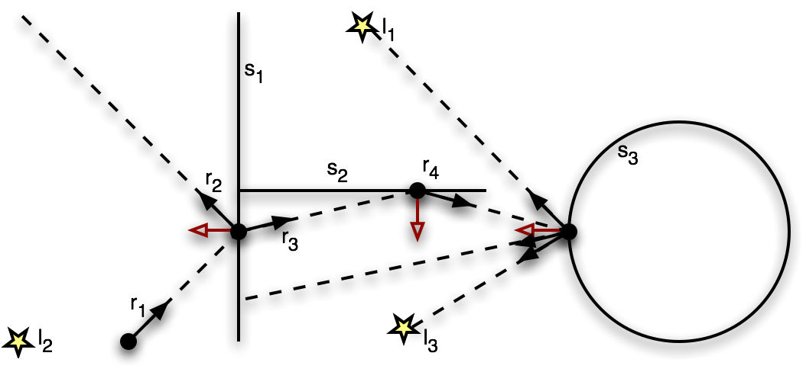

For this machine problem, you will implement parts of a ray tracing program. Ray tracing is a method of creating three dimensional graphics by tracing the path that light rays will take through a scene, producing realistic images that can have shadows and reflection. Once finished with this project, you will have a program that takes a scene description file as input and produces an image file output that is the three dimensional rendering of that scene. Those interesting in learning more about ray tracing can refer to the following optional references:
In this ray tracing project, scenes are hierarchically defined by camera parameters, light sources, and surfaces:
Objects in the scene, including light sources and the camera, all have locations defined by coordinates in three dimensional space. These coordinates are represented by a three dimensional vector data type. Surfaces and cameras also have colors associated with them, which are defined by an RGB color data type. Note that a surface has a specular and a diffuse color. The specular component defines the color of shiny surfaces, like glass or metal. The diffuse component defines the color of matte surfaces, like a chalkboard. Each surface has a specific geometry type, which is defined by the "class" property, allowing it to be a sphere, frustum (cone with top chopped off), circle, or quad (parallelogram defined by three vertices).
The scene is rendered by casting rays for each pixel in the image to determine the color of that pixel. Light is traced backwards using optical physics principles, exploring the tree of paths it takes to determine the contributions of each light source to the ray in question. Conveniently, tracing light backward through reflection and refraction is equivalent to tracing it forward.
To determine the color of a ray, that ray is tested with each surface in the scene to determine the point of closest intersection. A normal vector (vector indicating the direction the surface is "facing") at the point of intersection is also calculated. The normals are shown in red in the example. Depending on the properties of that surface, the normal and intersection point are used to compute additional rays to calculate the path that light will travel, and determine the color of the ray in question. For this example, the color of ray 1 is computed as follows:
Surface 3 is diffuse (it has no specular component). Therefore the color of ray 4 is determined by all of the light sources in the scene. Shadow rays are created from the point of intersection with surface 3 to each light source to determine if there is any surface in the way. Then, only the colors of the unobstructed light sources are added, each color multiplied by a diffuse coefficient produced by a cosine shading function (provided for you). Finally, the raw total is multiplied by the diffuse color of surface 3 itself:
ray 4 color = surface 3 diffuse * (c_diff_1 * light 1 color + c_diff_3 * light 3 color)
Surface 2 is purely reflective (it has no diffuse component, and no refraction index). Therefore, the color of ray 3 is the color of ray 4 multiplied by the reflection coefficient (1) and the specular color of surface 2.
ray 3 color = surface 2 specular * c_reflect * ray 4 color
Ray 2 intersects no surfaces. Therefore its color is the background color:
ray 2 color = background color
Surface 1 is refractive and reflective (it has a specular component and nonzero refraction index). Therefore transmission and reflection coefficients are calculated using Fresnel's equations (function provided for you) and used to weight the ray combination:
ray 1 color = surface 1 specular * (c_transmit * ray 3 color + c_reflect * ray 2 color)
Note that surfaces may have both diffuse and specular components, in which case the contributions of each should be added together. For more details on the ray tracing algorithm, see the documentation in ray_trace.c
This machine problem is divided into two parts. For the first part, you will be implementing parts of scene file parser. A parser is a program that interprets the contents of an input file, using it to build a data structure in memory. For the second part, you will be implementing the recursive core of the ray tracing algorithm.
For part 1, you will be implementing parts of the scene file parser module. This module is responsible for reading scene files that describe the camera, light sources, and objects within a scene to be rendered. It parses the scene file and loads the scene parameters in a scene data structure using a hierarchical parsing algorithm. This data structure is defined in scene.h and surface.h.
Your task is to implement the parsing functions marked with "Implement me!" in the scene file parser module input_file.c. The input file format is documented in that file, and there are example input files in the scenes directory. The other functions are implemented for you and should be used for reference. You can also add your own functions if you wish.
This is likely your first time working with large amounts of code which can be overwhelming at first, but if you focus on your task, using the documentation and other implemented functions for reference, you will find that the implementation is quite straightforward. Finally remember to think of the parsing problem in terms of systematic decomposition. In other words, if you see a function that solves a subset of the problem you're trying to solve, call it!
Note that you will only be submitting input_file.c, this means you should not rely on changes to any other files. To submit your code, run this command while in the src directory:
handin --MP 5.1 input_file.c
For part 2, you will be implementing the core ray tracing algorithm in ray_trace.c. This module is responsible for recursively determining the color of a ray by iterating through its tree of reflections and refractions. Ray/surface itersection, color addition/multiplication, and vector functions are provided for you, as well as functions for diffuse shading, ray reflection and refraction.
Your task is to implement the four functions marked "Implement me!" in ray_trace.c. You should not change the existing function interfaces since our tests may rely on them to provide partial credit. You can add addition functions if you find them useful.
As with part 1, don't rely on changes to other files. Run the following in the src directory to submit:
handin --MP 5.2 ray_trace.c
There is a Makefile in the top level directory. Use the following commands to use it:
The ray tracing program will be created in the "bin" directory. It has the following syntax:
bin/ray_trace <input_scene_file> <output_image.ppm>
You can name the output image anything you like, just remember to use the ".ppm" suffix so that the operating system will recognize it! Our "gold" implementation, "ray_trace_gold" is also in the bin directory. Note that ray tracing operation can take 10 seconds or more to complete, depending on scene complexity. For part 1, you can compare your images visually to the result from our implementation, noting that for grading your functions will be isolated from the rest of the program.
For part 2, use the ppm_compare utility to compare your image to ours:
bin/ppm_compare <image1.ppm> <image2.ppm>
The ppm_compare utility will determine how closely the images match, outputting a score from 0 to 10. If you use this utility to compare the image your program produces to our program, a score of 10 means full credit for the test case in question. Due to the nature of error accumulation in floating point computation, all results (even our code) will have some error. It is not wrong if your program produces an image that has a few pixels on the edges of surfaces that are different. In fact, you may have created an implementation that is more accurate than ours.
Note that the line length limit has been extended to 120 characters. This should give you more breathing room and reduce the use of vertical space so that more code can fit on the screen. Also note that module level documentation is already provided, so there is no need for an introductory paragraph.
Some of you have been mixing tabs and spaces for indentation, which can cause problems when the tab width is changed. The width of a tab is not always 8 spaces! (or 4 spaces, etc.) When someone else looks at your code in an editor with a different tab width, if you haven't been using tabs consistently, the indentation will be wrong. The simplest way to avoid this problem is to not use tabs at all. For example, to replace tabs with 4 spaces in vim, run:
:%s/\t/ /g